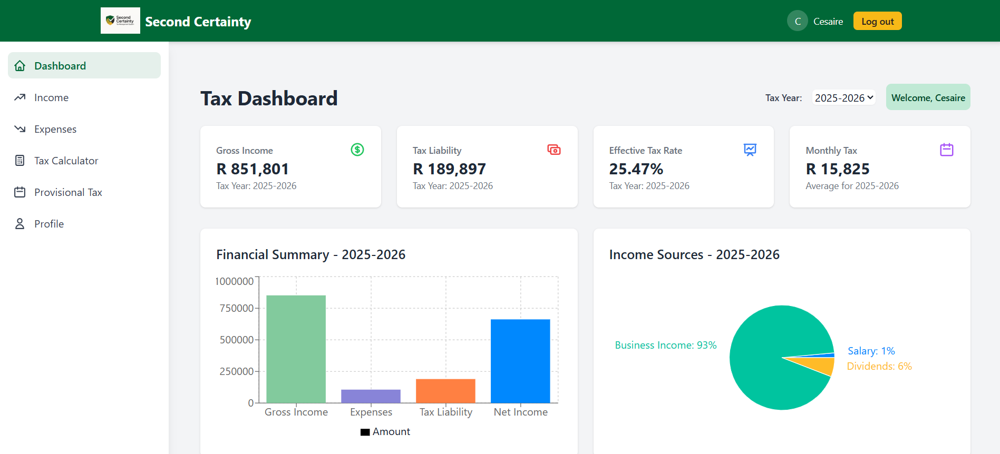
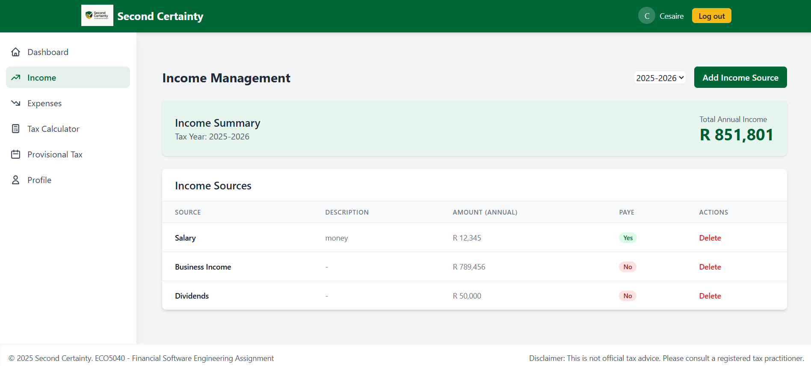
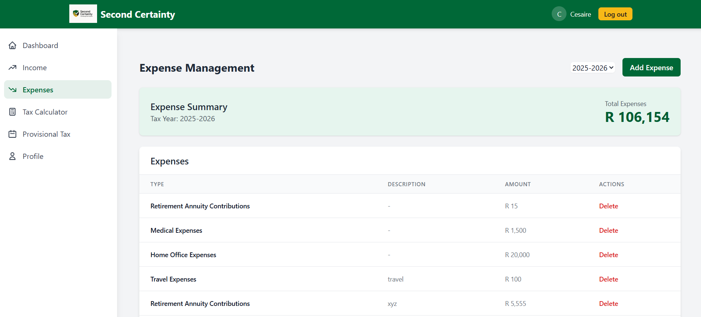
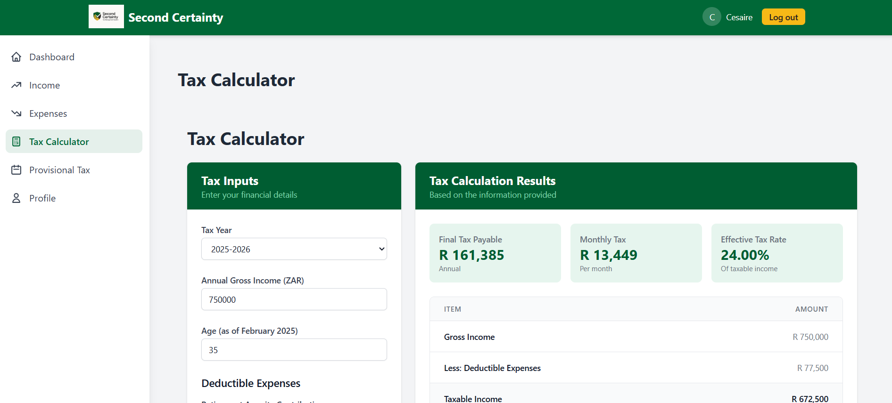
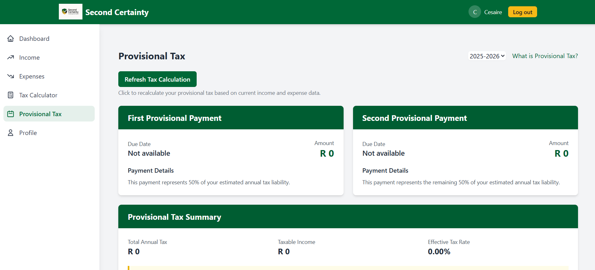
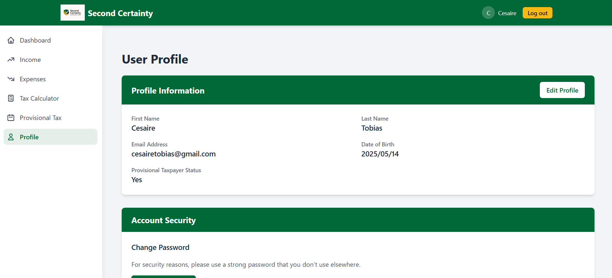

Second Certainty: Tax Management System

1 Project Description
Second Certainty addresses one of life’s two certainties—taxes—by providing South African individuals and small businesses with an intuitive platform for managing tax liabilities throughout the fiscal year.
Traditional tax management often occurs reactively at year-end, leading to unexpected liabilities, missed deductions, and financial stress. This application transforms this approach by implementing a proactive, year-round tax management system that continuously calculates estimated tax liabilities based on income streams, identifies potential deductions, forecasts provisional payments, and provides optimization strategies—all in real-time.
The system combines up-to-date South African tax regulations with personal financial data to deliver accurate tax calculations, visualizations, and strategic recommendations, helping users optimize their tax position throughout the year rather than scrambling at tax season.
2 Technical Requirements
2.1 Backend
- Framework: FastAPI 0.110.1 - chosen for its high performance, automatic documentation generation, and modern Python type annotations
- ORM: SQLAlchemy 2.0.40 - provides flexible database operations and ORM capabilities
- Validation: Pydantic 2.6.0 with pydantic-settings 2.2.1 - ensures robust data validation with minimal code
- Database: PostgreSQL (production), SQLite (development) - PostgreSQL chosen for scalability and reliability
- Authentication: JWT with HTTPBearer security and bcrypt password hashing - modern secure authentication approach
- Testing: Pytest 7.4.4 with pytest-asyncio 0.23.5 - comprehensive testing framework for Python including async support
- Documentation: OpenAPI (Swagger UI) - automatic API documentation generation
- HTTP Client: HTTPX 0.27.0 - modern async HTTP client for SARS website integration
- Web Scraping: BeautifulSoup4 4.12.3 with lxml 5.1.0 - for parsing SARS tax data
- Database Migrations: Alembic 1.13.1 - robust database schema management
- Server: Uvicorn 0.29.0 - high-performance ASGI server
2.2 Frontend
- Framework: React 18.2 - chosen for its component-based architecture and efficient rendering
- Routing: React Router 6.22.1 - provides declarative routing for React applications
- HTTP Client: Axios 1.6.7 - feature-rich HTTP client for API communication
- State Management: React Context API - built-in state management solution that avoids external dependencies
- Styling: Tailwind CSS 3.4.1 - utility-first CSS framework for rapid UI development
- Data Visualization: Recharts 2.12.0 - responsive charting library for React
- Build Tools: Create React App - simplified configuration and build process
2.3 Development Tools
- Code Formatting: Black 24.2.0, isort 5.13.2 - automated code formatting and import sorting
- Linting: Flake8 7.0.0 - code quality and style checking
- Environment Management: python-dotenv 1.0.1 - secure environment variable management
3 Application Features
3.1 Core User Management
- Secure Authentication: JWT-based authentication system with HTTPBearer tokens and bcrypt password hashing
- User Registration and Login: Comprehensive user account management with profile customization
- Provisional Taxpayer Support: Special handling for users subject to provisional tax requirements
- Admin Features: Administrative capabilities for system management and tax data updates
3.2 Financial Data Management
- Multi-Source Income Tracking: Support for salary, freelance, investment, rental, and other income types
- Comprehensive Expense Management: Categorized tax-deductible expenses with predefined types and validation
- Real-time Calculations: Immediate tax liability updates as financial data changes
- Historical Data: Multi-year tax data management with automatic tax year detection
3.3 Tax Calculations
- South African Tax Compliance: Current tax brackets, rebates, and thresholds for all age groups
- Provisional Tax Management: Automated calculation and tracking of provisional tax payments for eligible taxpayers
- Custom Tax Scenarios: “What-if” tax calculations for financial planning
- Age-based Calculations: Automatic rebate and threshold adjustments based on user age
3.4 Data Integration and Management
- SARS Website Integration: Automated scraping of latest tax rates with multiple fallback strategies
- Robust Data Pipeline: Multi-tiered approach for tax data retrieval including manual fallbacks
- Database Migration System: Alembic-powered schema management for seamless updates
- Comprehensive Logging: Structured logging with file rotation and error tracking
3.5 Security and Performance
- Input Validation: Comprehensive data validation using Pydantic schemas
- Rate Limiting: Configurable API rate limiting to prevent abuse
- CORS Management: Secure cross-origin resource sharing configuration
- Error Handling: Standardized error responses and comprehensive exception management
4 Deployment
The Second Certainty application is deployed on Render’s free tier, which may result in slow initial load times after periods of inactivity. When logging in, please note that you may need to retry after No response from server message - this is a function of deployment on Render’s free tier which experiences “cold starts” after 15 minutes of inactivity.
Live Application URLs: - Frontend Application: https://second-certainty.onrender.com - Backend API: https://second-certainty-api.onrender.com - API Documentation: https://second-certainty-api.onrender.com/api/docs
Performance Considerations: - Initial load times may exceed 30 seconds due to service “spin-up” on free tier - Subsequent requests are fast once the service is active - Database queries are optimized for performance despite platform limitations
For more detailed information on deployment, please refer to the following documentation:
- Installation Guide: Complete setup instructions for local development
- Deployment Guide: Comprehensive production deployment instructions
- API Documentation: Detailed API reference with examples
5 Code Repository
The project is maintained in separate repositories for optimal development workflow:
- Backend Repository: https://github.com/ces0491/second-certainty
- Frontend Repository: https://github.com/ces0491/second-certainty-frontend
The repositories include comprehensive documentation covering: - Installation and Setup: Step-by-step local development environment setup - API Documentation: Complete endpoint reference with request/response examples
- Database Schema: Detailed model relationships and migration procedures - Testing Framework: Unit, integration, and API testing suites - Deployment Procedures: Production deployment with security best practices
6 Screenshots
6.1 Dashboard
 The main dashboard showing key tax metrics, income/expense breakdown, and tax projection visualizations with real-time updates.
6.2 Income Tracking
 Comprehensive interface for managing multiple income sources with PAYE categorization and annual amount tracking.
6.3 Expense Management
 Expense tracking interface with predefined tax-deductible categories, amount validation, and documentation support.
6.4 Tax Calculator
 Interactive tax calculator showing real-time liability calculations based on current financial data with age-based rebate adjustments.
6.5 Provisional Tax Planner
 Specialized tool for calculating and tracking provisional tax payments throughout the fiscal year with due date management.
6.6 Profile Management
 User profile interface for managing personal tax information, provisional taxpayer status, and account preferences.
7 Technical Architecture
7.1 Backend Architecture
- RESTful API Design: Clean, consistent endpoint structure following REST principles
- Modular Code Organization: Separation of concerns with dedicated modules for authentication, tax calculations, and data management
- Async Processing: Non-blocking operations for web scraping and external API calls
- Database Abstraction: SQLAlchemy ORM with migration support for schema evolution
- Error Handling: Comprehensive exception management with structured error responses
7.2 Frontend Architecture
- Component-Based Design: Reusable React components with clear separation of concerns
- State Management: Context API for global state with local component state for UI interactions
- Responsive Design: Mobile-first Tailwind CSS implementation for all screen sizes
- Data Visualization: Interactive charts and graphs using Recharts library
- API Integration: Centralized Axios configuration with error handling and retry logic
7.3 Security Implementation
- Authentication Flow: JWT tokens with HTTPBearer security and automatic token refresh
- Password Security: Bcrypt hashing with salt for secure password storage
- Input Sanitization: Comprehensive validation at both API and database levels
- CORS Configuration: Secure cross-origin resource sharing with whitelisted domains
- Rate Limiting: API endpoint protection against abuse and DDoS attacks
8 Future Enhancements
Rate Limiting: Actually implement rate limiting
Password Updates: Updating profile data is not fully supported yet
Improve Standardization: For logging, error handling, user input sanitization
Improve Token Validation
Complete Docstrings
Write More Tests
Mobile Application: React Native app for iOS and Android with offline capability
Advanced Reporting: PDF generation for tax reports and provisional tax statements
Email Notifications: Automated reminders for provisional tax due dates and tax season
Enhanced Security: Two-factor authentication and advanced session management
Banking Integration: Direct API connections with South African banks for automatic transaction import
Advanced Analytics: Machine learning-powered tax optimization recommendations
Multi-User Support: Family and business account management with role-based permissions
Tax Practitioner Features: Professional tools for accountants and tax consultants
SARS e-Filing Integration: Direct submission of tax returns through official SARS channels
AI-Powered Insights: Intelligent tax planning recommendations based on financial patterns
Expanded Tax Types: Support for additional tax types including CGT, estate duty, and VAT
Enterprise Features: Multi-company management for large organizations and tax practitioners